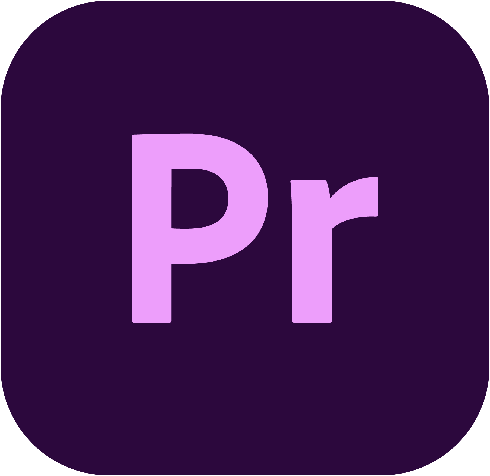

Adobe Premiere Pro
Jeg har arbejdet i Premiere Pro siden 2017, hvor jeg først lærte programmet at kende. Siden har jeg udviklet mig meget i min forståelse af programmet og føler mig erfaren og hjemme i programmet.

Jeg er en visuel storyteller med fokus på at indfange stemning, autenticitet og et flot æstetisk snit.
Mit navn er Asbjørn Thorup Møller. Jeg er en passioneret visuel storyteller. Jeg brænder for at formidle videocontent der fanger en særlig stemning og autenticitet, samtidigt med jeg sætter en ære i det æstetiske. Jeg brænder for at skabe filmisk indhold, der både føles ægte og engagerende både til enkeltpersoner og virksomheder. Jeg tror på alle mennesker har en særlig historie og jeg har evnerne til at fomidle den på en god og nærværende måde.

Et udvalg af mine projekter.
Uddannelse og erfaring
SDU, Odense
UCL, Odense
Producerede kampagnevideoer og portrætter.
Informationsvideoer, undervisningsmateriale og dekanvideoer.
Folkemødevideoer, food content, livestreaming & BTS-optagelser.
ATM Content — Selvstændig freelancer
De programmer jeg arbejder i:
Jeg har arbejdet i Premiere Pro siden 2017, hvor jeg først lærte programmet at kende. Siden har jeg udviklet mig meget i min forståelse af programmet og føler mig erfaren og hjemme i programmet.
Jeg har arbejdet i programmet siden 2023 og har en solid og grundig forståelse for det. DaVinci er især stærkt til color grading, men er mindre intuitivt end Premiere Pro.
Jeg har arbejdet i Lightroom siden 2017 til større og mindre billedredigeringsprojekter, bl.a. redigering af bryllupsbilleder og barnedåbsbilleder.
Jeg bruger programmet til animationer og motion graphics, der ikke kan løses i Premiere Pro.
Jeg bruger Photoshop til billedretouch, komposition og grafiske elementer.
Jeg bruger InDesign til layout og opsætning af tryk- og præsentationsmateriale.
Optagelse, lys og filmisk komposition.
Klip, color grading, lyd, tempo og grafik.
SoMe-tilpasning, storytelling og målgruppeforståelse.
Visuel identitet, tone of voice og autenticitet.
Fortæl mig om dit projekt — jeg svarer hurtigst muligt.